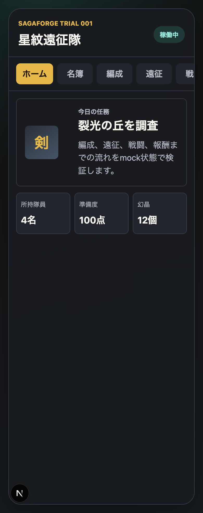
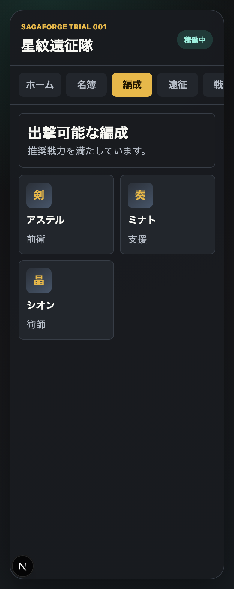
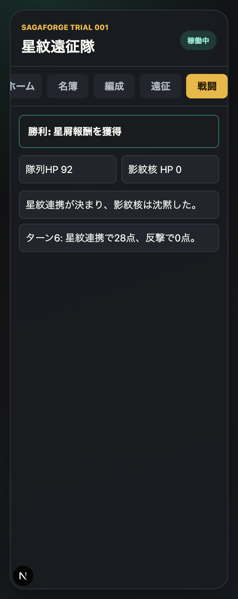
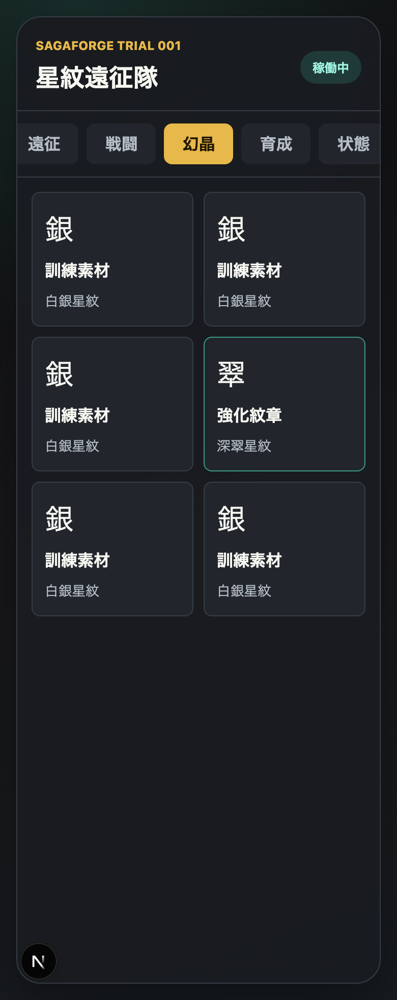
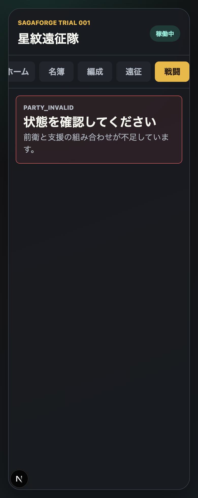
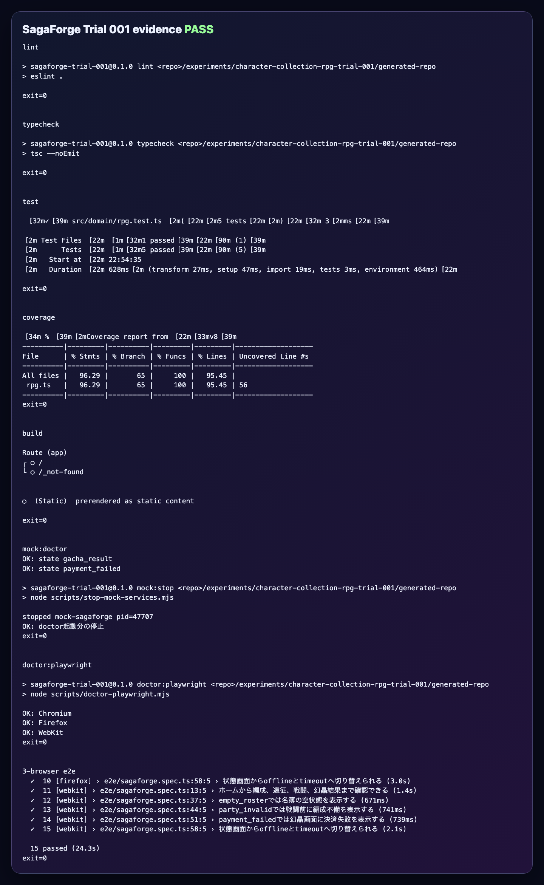

AIDD Control Plane Dogfood 001：ロマサガRS風ではなく、キャラ収集RPGの体験パターンをAIに作らせる
2026-07-02 / Codex Mastery Lab
対象: AIDD Control Plane Dogfood / キャラ収集RPG / Next.js / Playwright 3ブラウザ
結果: 商標を使わないスマホ向けキャラ収集RPGプロトタイプを、AIDD Control Plane型の依頼書からCodexで生成し、15本の3ブラウザE2Eまで通した
読者の悩み
AIにこう頼みたくなることがある。
ロマサガRSみたいなアプリを作ってでも、この頼み方は危ない。
理由は2つある。
1つ目は、実在IPの商標・キャラ・画像・文言をそのまま使ってしまう危険があること。
2つ目は、AIが「それっぽい画面」だけを作って、編成、バトル、失敗状態、テスト、証跡が抜けること。
そこで今回は、AIDD Control Planeをdogfoodする。
つまり、AIDD Control Planeが目指している
作りたいものを入力する
設計書に変換する
AI依頼書に変換する
検証計画に変換する
実装して証跡を残すという流れを、実際に キャラ収集RPGプロトタイプ で試す。
今回の仮説
AIDD Control Planeの価値は、アプリを直接生成することではない。
価値は、雑な依頼を次のような検証可能な依頼へ変えることにある。
商標を使わず、キャラ収集RPGの体験パターンだけを抽象化する
ホーム、名簿、編成、遠征、戦闘、幻晶結果、育成を持つ
empty/offline/timeout/battle_win/battle_lose/party_invalid/payment_failedを検証する
mock serviceをE2Eから制御する
Chromium/Firefox/WebKitで確認するこの形にできれば、「ロマサガRSみたいなアプリ」という曖昧な依頼を、AIが実装しやすく、人間が検証しやすい形にできるはずだ。
作ったもの
今回作ったプロトタイプ名は SagaForge Trial 001。
実在IPは使わない。画面内では「星紋遠征隊」「幻晶」「裂光の丘」などの独自名を使った。
主な画面は次の通り。
- ホーム
- 名簿
- 編成
- 遠征
- 戦闘
- 幻晶結果
- 育成
- 状態確認
ホーム画面

ホームでは、今日の任務、所持隊員、準備度、幻晶状態が見える。
ここで重要なのは、見た目だけではなく「準備度」が数値で出ていることだ。
AIにゲーム風UIを頼むと、カードやボタンは作られる。
でも、何をもって出撃可能なのか、どの状態を検証すべきなのかは抜けやすい。
今回はその判断をドメインロジックに入れた。
編成画面

編成画面では、前衛・支援などの役割を持つ隊員が表示される。
今回のAIDD Task Packetでは、単なるキャラ一覧ではなく、party_invalid という失敗状態を要求した。
これにより、E2Eで「編成が不十分なときに戦闘へ進めない」ことを確認できる。
戦闘画面

戦闘は本格的なゲームロジックではない。
ただし、ターン進行、勝利/敗北、ログ表示はある。
今回の目的は本番ゲームを作ることではなく、AIに渡す依頼の中で
battle_win
battle_lose
party_invalidを状態契約として指定し、画面とE2Eで確認できるようにすることだった。
幻晶結果画面

ガチャ風の結果画面も作った。
ただし、本物の課金や本物のガチャ確率は扱わない。
記事でもコードでも、これは ガチャ風UI として扱う。
本番課金・本番確率・実サービスの表現は非ゴールにした。
失敗状態

失敗状態では、編成不備や決済失敗などを表示する。
ここがAIDD Control Plane的には重要だ。
「それっぽいアプリ」は、成功画面だけなら作りやすい。
でも実際にAI開発で困るのは、失敗状態がないことだ。
今回のAI Task Packetでは、最初から次の状態を要求した。
empty_roster
loading
success
offline
timeout
battle_win
battle_lose
party_invalid
gacha_result
payment_failed検証ログ

独立検証では次を実行した。
| command | result |
|---|---|
pnpm install --frozen-lockfile | pass |
| source/IP leak scan | pass |
pnpm run lint | pass |
pnpm run typecheck | pass |
pnpm run test | 5 tests passed |
pnpm run test:coverage | statements 96.29% |
pnpm run build | pass |
pnpm run mock:doctor | pass |
pnpm run doctor:playwright | Chromium / Firefox / WebKit pass |
pnpm run test:e2e | 15 tests passed |
E2Eは5シナリオ × 3ブラウザで通した。
ホームから編成、遠征、戦闘、幻晶結果まで確認できる
empty_rosterでは名簿の空状態を表示する
party_invalidでは戦闘前に編成不備を表示する
payment_failedでは幻晶画面に決済失敗を表示する
状態画面からofflineとtimeoutへ切り替えられる失敗と修正
最初、CodexはPlaywrightのポートに 3000 を使った。
しかし、このMacでは別のNext.jsアプリがすでに 3000 を使っていた。
そのため、Playwrightが違うアプリを見に行き、E2Eが長時間止まった。
修正は単純だった。
E2E専用ポートを 3000 から 3141 に変更このあと、Chromium単体で5本、さらにChromium/Firefox/WebKitの15本が通った。
ここから分かることは、AIDD Control Planeに次の項目を入れるべきだということ。
E2E webServer portは既存プロセスと衝突しない専用ポートにする
reuseExistingServerで別アプリを掴まないようにする読者が使えるチェックリスト
AIに「〇〇風アプリ」を頼む前に、最低限これを決める。
| 質問 | 何を守るためか |
|---|---|
| 実在IPの何を使わないか？ | 商標・公式素材・公式文言の混入を防ぐ |
| 体験パターンとして抽象化する要素は何か？ | ただのコピーではなく安全なプロトタイプにする |
| 成功画面以外にどの状態を作るか？ | 見た目だけのvibe codeを防ぐ |
| E2Eから状態をどう切り替えるか？ | 人間が検証できるようにする |
| mock serviceはUIから独立しているか？ | 状態契約をテスト可能にする |
| 3ブラウザで見る必要があるか？ | ローカルだけの偶然を減らす |
| terminal evidenceとスクショを残すか？ | 「できた」の証拠を残す |
AIDD Control Planeへの戻し
今回、AIDD Control Planeの価値はかなり分かりやすくなった。
ユーザーが欲しいのは、単なる設計書ではない。
自分の「作りたい」を安全で検証可能なAI依頼書に変えること今回なら、
ロマサガRSみたいなアプリを、
商標を避けたキャラ収集RPGプロトタイプ
ホーム/名簿/編成/遠征/戦闘/幻晶/育成
10個の状態契約
mock service
3ブラウザE2E
検証証跡に変換した。
これがAIDD Control Planeの本当の使い道に近い。
次回
Trial 001では、キャラ収集RPGの骨格と検証ループは作れた。
次回 Trial 002 では、次を改善する。
- バトル中の選択肢を増やす
- キャラ育成の変化を画面に反映する
- 名簿フィルタや編成入れ替えを追加する
- mock serviceをさらに分離する
- AIDD Control Plane側に「IP安全性チェック」を戻す
この連載では、AIDD Control Planeが本当に役に立つかを、実際のアプリ作りで検証していく。